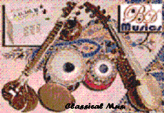

Classical music is the art music produced in, or rooted in, the traditions of Western liturgical and secular music, encompassing a broad period from roughly the 11th century to present times.[1] The central norms of this tradition became codified between 1550 and 1900, which is known as the common practice period.
European music is largely distinguished from many other non-European and popular musical forms by its system of staff notation, in use since about the 16th century.[2] Western staff notation is used by composers to prescribe to the performer the pitch, speed, meter, individual rhythms and exact execution of a piece of music. This leaves less room for practices such as improvisation and ad libitum ornamentation, that are frequently heard in non-European art music (as in Indian classical music and Japanese traditional music) and popular music |  |